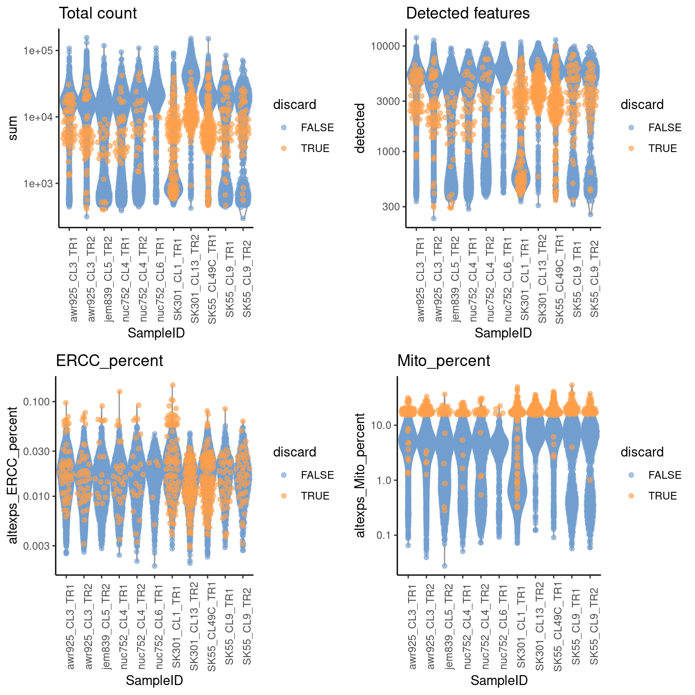
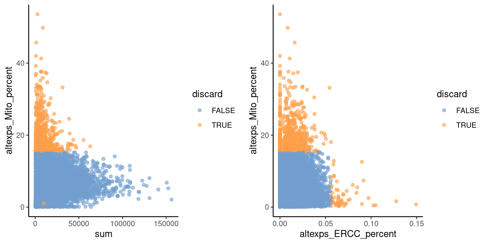

QC
Afsheen
2023-01-11
Last updated: 2023-02-13
Checks: 6 1
Knit directory: scRNA_Qualitycheck/
This reproducible R Markdown analysis was created with workflowr (version 1.7.0). The Checks tab describes the reproducibility checks that were applied when the results were created. The Past versions tab lists the development history.
Great! Since the R Markdown file has been committed to the Git repository, you know the exact version of the code that produced these results.
Great job! The global environment was empty. Objects defined in the global environment can affect the analysis in your R Markdown file in unknown ways. For reproduciblity it’s best to always run the code in an empty environment.
The command set.seed(20230211) was run prior to running
the code in the R Markdown file. Setting a seed ensures that any results
that rely on randomness, e.g. subsampling or permutations, are
reproducible.
Great job! Recording the operating system, R version, and package versions is critical for reproducibility.
Nice! There were no cached chunks for this analysis, so you can be confident that you successfully produced the results during this run.
Using absolute paths to the files within your workflowr project makes it difficult for you and others to run your code on a different machine. Change the absolute path(s) below to the suggested relative path(s) to make your code more reproducible.
| absolute | relative |
|---|---|
| /files/scRNA_Qualitycheck/data/ | data |
| /files/scRNA_Qualitycheck/output/01_QC_scRNA_seurat_integrated.Rdata | output/01_QC_scRNA_seurat_integrated.Rdata |
Great! You are using Git for version control. Tracking code development and connecting the code version to the results is critical for reproducibility.
The results in this page were generated with repository version 29bb9a8. See the Past versions tab to see a history of the changes made to the R Markdown and HTML files.
Note that you need to be careful to ensure that all relevant files for
the analysis have been committed to Git prior to generating the results
(you can use wflow_publish or
wflow_git_commit). workflowr only checks the R Markdown
file, but you know if there are other scripts or data files that it
depends on. Below is the status of the Git repository when the results
were generated:
Ignored files:
Ignored: analysis/figure/
Untracked files:
Untracked: data/data/
Untracked: output/tmp.txt
Unstaged changes:
Deleted: output/README.md
Note that any generated files, e.g. HTML, png, CSS, etc., are not included in this status report because it is ok for generated content to have uncommitted changes.
These are the previous versions of the repository in which changes were
made to the R Markdown (analysis/01_QC_scRNA.Rmd) and HTML
(docs/01_QC_scRNA.html) files. If you’ve configured a
remote Git repository (see ?wflow_git_remote), click on the
hyperlinks in the table below to view the files as they were in that
past version.
| File | Version | Author | Date | Message |
|---|---|---|---|---|
| Rmd | e16a087 | achiocch | 2023-02-12 | initial commit MVP Analysis |
| html | e16a087 | achiocch | 2023-02-12 | initial commit MVP Analysis |
QC of the samples
Data Preparation
Data Loading
as(<dgTMatrix>, "dgCMatrix") is deprecated since Matrix 1.5-0; do as(., "CsparseMatrix") instead'select()' returned 1:many mapping between keys and columns
'select()' returned 1:many mapping between keys and columns
| Version | Author | Date |
|---|---|---|
| e16a087 | achiocch | 2023-02-12 |
[1] "detected genes passing QC"detectedGenes
FALSE TRUE
8894 27634 low_lib_size low_n_features high_altexps_Mito_percent
0 0 647
high_altexps_ERCC_percent discard
59 705 Data Inspection
Warning: Transformation introduced infinite values in continuous y-axis
Transformation introduced infinite values in continuous y-axisWarning: Removed 6815 rows containing non-finite values (`stat_ydensity()`).Warning: Removed 6815 rows containing missing values (`geom_point()`).
| Version | Author | Date |
|---|---|---|
| e16a087 | achiocch | 2023-02-12 |

| Version | Author | Date |
|---|---|---|
| e16a087 | achiocch | 2023-02-12 |
#Read QC samples only
10X data contains more than one type and is being returned as a list containing matrices of each type.Inspect Cells per samples

| Version | Author | Date |
|---|---|---|
| e16a087 | achiocch | 2023-02-12 |

| Version | Author | Date |
|---|---|---|
| e16a087 | achiocch | 2023-02-12 |
Inspect UMI per samples

| Version | Author | Date |
|---|---|---|
| e16a087 | achiocch | 2023-02-12 |

| Version | Author | Date |
|---|---|---|
| e16a087 | achiocch | 2023-02-12 |
Inspect Genes per samples

| Version | Author | Date |
|---|---|---|
| e16a087 | achiocch | 2023-02-12 |

| Version | Author | Date |
|---|---|---|
| e16a087 | achiocch | 2023-02-12 |

| Version | Author | Date |
|---|---|---|
| e16a087 | achiocch | 2023-02-12 |

| Version | Author | Date |
|---|---|---|
| e16a087 | achiocch | 2023-02-12 |
Inspect Quality per samples
`geom_smooth()` using formula = 'y ~ x'
| Version | Author | Date |
|---|---|---|
| e16a087 | achiocch | 2023-02-12 |

| Version | Author | Date |
|---|---|---|
| e16a087 | achiocch | 2023-02-12 |

| Version | Author | Date |
|---|---|---|
| e16a087 | achiocch | 2023-02-12 |

| Version | Author | Date |
|---|---|---|
| e16a087 | achiocch | 2023-02-12 |
Filter and Quality Control
Warning: replacing previous import 'data.table::shift' by 'tictoc::shift' when
loading 'CelliD'Centering and scaling data matrixPC_ 1
Positive: BGN, PRRX1, COL6A3, IL1R1, COL14A1, COL1A1, IGF1, COL5A2, MGP, COL3A1
PDGFRL, ADAMTS1, PDGFRA, FBLN1, TGFBI, MMP2, CRISPLD2, SERPINF1, RARRES1, LOXL2
P4HA3, PCOLCE, PAPPA, LAMA4, THBS1, FHL2, COL5A1, ARHGAP28, SFRP2, BNC2
Negative: CKB, GPM6A, TAGLN3, PTPRZ1, BEX1, TUBB3, STMN4, RTN1, NNAT, CD24
STMN2, ELAVL3, JPT1, DNER, CHD7, KIF5C, DCX, HIST1H4C, POU3F2, ANK3
NRXN1, TFPI2, LY6H, PCDH9, TMSB15A, GNG3, ATP1A2, C1orf61, PKIA, KIAA0408
PC_ 2
Positive: FTL, RGCC, DLK1, IGFBP5, CALY, CDC42EP5, SULF2, NEFL, DIRAS3, PTGDS
CRABP1, STMN2, ECEL1, PPP1R17, IFITM3, TCIM, SNCG, IFITM2, PRSS56, SPINT2
HOXB7, PPP1R1B, TAGLN, SST, RASL10B, PAPPA2, FGD5, CAMK2N1, NTS, WNT4
Negative: MKI67, ASPM, GTSE1, DLGAP5, BUB1, KNL1, KIF2C, CENPE, KIFC1, CENPF
TTK, NUF2, SGO2, NDC80, TOP2A, CCNA2, TPX2, KIF4A, NEK2, CKAP2L
PBK, NUSAP1, KIF20A, HJURP, CDCA2, SGO1, KIF11, CDCA8, BUB1B, CDC20
PC_ 3
Positive: STMN2, NCAM1, DCX, INA, CRMP1, NSG2, ELAVL4, SCG3, MAPT, SOX4
SEZ6L2, TUBB3, SRRM4, MYT1L, ELAVL3, GNG3, GABRB3, GRIA2, RTN1, SCN3B
RNF165, GNG4, CELF4, IGFBPL1, KIAA0408, SOX11, ATCAY, CELF5, ELAVL2, ATP1A3
Negative: TFPI2, CLU, FBLN5, DLK1, BHLHE41, NR4A3, COL23A1, IFI6, LY6H, RGCC
IFITM2, AHNAK, CFI, ADAMTS9, ECEL1, ANGPT1, CP, ATP1A2, EDNRB, PPP1R17
THSD4, GNAL, EMP2, COL4A5, CEBPD, IFITM1, DIRAS3, WNT2B, CCDC80, IFITM3
PC_ 4
Positive: COL1A1, FTL, LGALS1, SST, TTR, MGP, TWIST2, MGST1, COL3A1, PRRX1
ITM2A, IGF1, PDGFRL, EDNRA, SFRP2, COL6A3, BGN, HAS2, SPARCL1, PTTG1
POSTN, DPT, CTSK, FRZB, LOXL2, TNFAIP6, DCN, PDGFRA, PRRX2, FABP5
Negative: GNAL, ZFHX4, COL4A5, AKAP12, BMP5, HOXB7, PSD3, LIMCH1, RGS9, COL23A1
CYFIP2, NRIP1, SH3BP5, HOXB8, HOXB9, PLEKHG4B, MAP7, SEMA3C, COL4A6, GALNT1
SLC5A7, PRUNE2, ADGRB3, CDH11, KIF5C, PLS3, CEMIP2, ADAMTS9, MAL, SMAD2
PC_ 5
Positive: RGCC, NMU, RAMP1, MAL, SCTR, CRABP1, ZFHX4, ECEL1, DLK1, HOXB7
DOC2B, FGD5, PRSS56, NTS, F10, HOXB8, ENO3, SLC5A7, BMP5, TNFAIP3
WNT4, CCBE1, HOXA4, HOXB9, HOXB5, PAPSS2, APCDD1L, TCIM, RGS9, TFPI2
Negative: NKAIN3, SERPINE2, PTPRZ1, SPARCL1, GPM6A, NR2F1, MGST1, ECM2, GFAP, CRISPLD1
NRCAM, LRRIQ1, CD36, HYDIN, SYNM, AQP4, EDNRB, SERPINI1, PCDH10, PIFO
PCDH9, HMGCS1, PTN, TTC6, IRX1, FOXA1, GOLIM4, C8orf34, ITGA6, CFAP126 Warning: The default method for RunUMAP has changed from calling Python UMAP via reticulate to the R-native UWOT using the cosine metric
To use Python UMAP via reticulate, set umap.method to 'umap-learn' and metric to 'correlation'
This message will be shown once per session07:42:29 UMAP embedding parameters a = 0.9922 b = 1.11207:42:29 Read 12249 rows and found 10 numeric columns07:42:29 Using Annoy for neighbor search, n_neighbors = 3007:42:29 Building Annoy index with metric = cosine, n_trees = 500% 10 20 30 40 50 60 70 80 90 100%[----|----|----|----|----|----|----|----|----|----|**************************************************|
07:42:30 Writing NN index file to temp file /tmp/RtmpOxOFHA/file16e910cf2c45
07:42:30 Searching Annoy index using 1 thread, search_k = 3000
07:42:34 Annoy recall = 100%
07:42:34 Commencing smooth kNN distance calibration using 1 thread with target n_neighbors = 30
07:42:36 Initializing from normalized Laplacian + noise (using RSpectra)
07:42:36 Commencing optimization for 200 epochs, with 494522 positive edges
07:42:42 Optimization finished
Batch correction
Plotting Cellular Structure after QC and Batch Corrections

| Version | Author | Date |
|---|---|---|
| e16a087 | achiocch | 2023-02-12 |
snapshotDate(): 2022-10-31loading from cacherequire("ensembldb")Warning: The following features are not present in the object: UBR7, RFC2,
RAD51, MCM2, TIPIN, MCM6, UNG, POLD3, WDR76, CDC45, MSH2, MCM5, POLA1, RPA2,
CASP8AP2, E2F8, PCNA, BRIP1, DSCC1, CDCA7, CHAF1B, USP1, SLBP, RRM1, FEN1,
EXO1, PRIM1, UHRF1, not searching for symbol synonymsWarning: The following features are not present in the object: CBX5, CTCF, not
searching for symbol synonymsInspect Cell Cylce Phase

| Version | Author | Date |
|---|---|---|
| e16a087 | achiocch | 2023-02-12 |

| Version | Author | Date |
|---|---|---|
| e16a087 | achiocch | 2023-02-12 |

| Version | Author | Date |
|---|---|---|
| e16a087 | achiocch | 2023-02-12 |
R version 4.2.2 (2022-10-31)
Platform: x86_64-pc-linux-gnu (64-bit)
Running under: Ubuntu 22.04.1 LTS
Matrix products: default
BLAS: /usr/lib/x86_64-linux-gnu/blas/libblas.so.3.10.0
LAPACK: /usr/lib/x86_64-linux-gnu/lapack/liblapack.so.3.10.0
locale:
[1] LC_CTYPE=en_US.UTF-8 LC_NUMERIC=C
[3] LC_TIME=en_US.UTF-8 LC_COLLATE=en_US.UTF-8
[5] LC_MONETARY=en_US.UTF-8 LC_MESSAGES=en_US.UTF-8
[7] LC_PAPER=en_US.UTF-8 LC_NAME=C
[9] LC_ADDRESS=C LC_TELEPHONE=C
[11] LC_MEASUREMENT=en_US.UTF-8 LC_IDENTIFICATION=C
attached base packages:
[1] stats4 stats graphics grDevices utils datasets methods
[8] base
other attached packages:
[1] ensembldb_2.22.0 AnnotationFilter_1.22.0
[3] GenomicFeatures_1.50.4 randomcoloR_1.1.0.1
[5] RCurl_1.98-1.10 RColorBrewer_1.1-3
[7] data.table_1.14.6 forcats_1.0.0
[9] stringr_1.5.0 dplyr_1.1.0
[11] purrr_1.0.1 readr_2.1.3
[13] tidyr_1.3.0 tibble_3.1.8
[15] tidyverse_1.3.2 SeuratObject_4.1.3
[17] Seurat_4.3.0 scater_1.26.1
[19] org.Hs.eg.db_3.16.0 AnnotationDbi_1.60.0
[21] AnnotationHub_3.6.0 BiocFileCache_2.6.0
[23] dbplyr_2.3.0 scuttle_1.8.4
[25] DropletUtils_1.18.1 SingleCellExperiment_1.20.0
[27] SummarizedExperiment_1.28.0 Biobase_2.58.0
[29] GenomicRanges_1.50.2 GenomeInfoDb_1.34.9
[31] IRanges_2.32.0 S4Vectors_0.36.1
[33] BiocGenerics_0.44.0 MatrixGenerics_1.10.0
[35] matrixStats_0.63.0 cowplot_1.1.1
[37] ggplot2_3.4.0 workflowr_1.7.0
loaded via a namespace (and not attached):
[1] rappdirs_0.3.3 rtracklayer_1.58.0
[3] scattermore_0.8 R.methodsS3_1.8.2
[5] bit64_4.0.5 knitr_1.42
[7] irlba_2.3.5.1 DelayedArray_0.24.0
[9] R.utils_2.12.2 KEGGREST_1.38.0
[11] generics_0.1.3 ScaledMatrix_1.6.0
[13] callr_3.7.3 RSQLite_2.2.20
[15] RANN_2.6.1 future_1.31.0
[17] bit_4.0.5 tzdb_0.3.0
[19] xml2_1.3.3 spatstat.data_3.0-0
[21] lubridate_1.9.1 httpuv_1.6.8
[23] assertthat_0.2.1 viridis_0.6.2
[25] gargle_1.3.0 xfun_0.37
[27] hms_1.1.2 jquerylib_0.1.4
[29] evaluate_0.20 promises_1.2.0.1
[31] restfulr_0.0.15 progress_1.2.2
[33] fansi_1.0.4 readxl_1.4.1
[35] igraph_1.3.5 DBI_1.1.3
[37] htmlwidgets_1.6.1 spatstat.geom_3.0-6
[39] RcppArmadillo_0.11.4.3.1 googledrive_2.0.0
[41] ellipsis_0.3.2 RSpectra_0.16-1
[43] backports_1.4.1 V8_4.2.2
[45] biomaRt_2.54.0 deldir_1.0-6
[47] sparseMatrixStats_1.10.0 vctrs_0.5.2
[49] ROCR_1.0-11 abind_1.4-5
[51] cachem_1.0.6 withr_2.5.0
[53] progressr_0.13.0 sctransform_0.3.5
[55] GenomicAlignments_1.34.0 prettyunits_1.1.1
[57] goftest_1.2-3 cluster_2.1.4
[59] lazyeval_0.2.2 crayon_1.5.2
[61] spatstat.explore_3.0-6 labeling_0.4.2
[63] edgeR_3.40.2 pkgconfig_2.0.3
[65] ProtGenerics_1.30.0 nlme_3.1-162
[67] vipor_0.4.5 rlang_1.0.6
[69] globals_0.16.2 lifecycle_1.0.3
[71] miniUI_0.1.1.1 filelock_1.0.2
[73] modelr_0.1.10 rsvd_1.0.5
[75] cellranger_1.1.0 rprojroot_2.0.3
[77] polyclip_1.10-4 lmtest_0.9-40
[79] Matrix_1.5-3 Rhdf5lib_1.20.0
[81] zoo_1.8-11 reprex_2.0.2
[83] beeswarm_0.4.0 whisker_0.4.1
[85] ggridges_0.5.4 processx_3.8.0
[87] googlesheets4_1.0.1 rjson_0.2.21
[89] png_0.1-8 viridisLite_0.4.1
[91] bitops_1.0-7 getPass_0.2-2
[93] R.oo_1.25.0 KernSmooth_2.23-20
[95] rhdf5filters_1.10.0 Biostrings_2.66.0
[97] blob_1.2.3 DelayedMatrixStats_1.20.0
[99] parallelly_1.34.0 spatstat.random_3.1-3
[101] beachmat_2.14.0 scales_1.2.1
[103] memoise_2.0.1 magrittr_2.0.3
[105] plyr_1.8.8 ica_1.0-3
[107] zlibbioc_1.44.0 compiler_4.2.2
[109] BiocIO_1.8.0 dqrng_0.3.0
[111] fitdistrplus_1.1-8 Rsamtools_2.14.0
[113] cli_3.6.0 XVector_0.38.0
[115] listenv_0.9.0 patchwork_1.1.2
[117] pbapply_1.7-0 ps_1.7.2
[119] mgcv_1.8-41 MASS_7.3-58.2
[121] tidyselect_1.2.0 stringi_1.7.12
[123] highr_0.10 yaml_2.3.7
[125] askpass_1.1 BiocSingular_1.14.0
[127] locfit_1.5-9.7 ggrepel_0.9.3
[129] grid_4.2.2 sass_0.4.5
[131] fastmatch_1.1-3 tools_4.2.2
[133] timechange_0.2.0 future.apply_1.10.0
[135] parallel_4.2.2 rstudioapi_0.14
[137] git2r_0.31.0 gridExtra_2.3
[139] farver_2.1.1 Rtsne_0.16
[141] digest_0.6.31 BiocManager_1.30.19
[143] shiny_1.7.4 Rcpp_1.0.10
[145] broom_1.0.3 BiocVersion_3.16.0
[147] later_1.3.0 RcppAnnoy_0.0.20
[149] httr_1.4.4 colorspace_2.1-0
[151] XML_3.99-0.13 rvest_1.0.3
[153] fs_1.6.1 tensor_1.5
[155] reticulate_1.28 umap_0.2.10.0
[157] splines_4.2.2 uwot_0.1.14
[159] spatstat.utils_3.0-1 sp_1.6-0
[161] CelliD_1.6.2 plotly_4.10.1
[163] xtable_1.8-4 jsonlite_1.8.4
[165] R6_2.5.1 tictoc_1.1
[167] pillar_1.8.1 htmltools_0.5.4
[169] mime_0.12 glue_1.6.2
[171] fastmap_1.1.0 BiocParallel_1.32.5
[173] BiocNeighbors_1.16.0 interactiveDisplayBase_1.36.0
[175] codetools_0.2-19 fgsea_1.24.0
[177] utf8_1.2.3 lattice_0.20-45
[179] bslib_0.4.2 spatstat.sparse_3.0-0
[181] curl_5.0.0 ggbeeswarm_0.7.1
[183] leiden_0.4.3 openssl_2.0.5
[185] survival_3.5-0 limma_3.54.1
[187] rmarkdown_2.20 munsell_0.5.0
[189] rhdf5_2.42.0 GenomeInfoDbData_1.2.9
[191] HDF5Array_1.26.0 haven_2.5.1
[193] reshape2_1.4.4 gtable_0.3.1